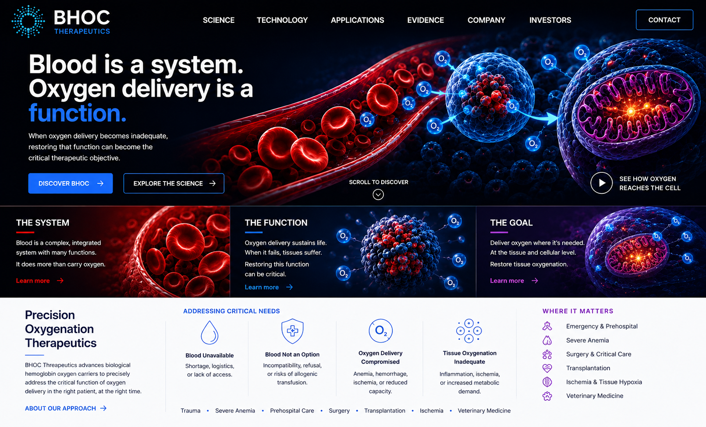

Emergency & Prehospital
Time-critical oxygen delivery where blood logistics and access can constrain care.

The Science
Effective oxygen delivery depends on more than a hemoglobin number. Oxygen loading, blood flow, hemoglobin oxygen affinity, microcirculation, unloading, diffusion and tissue demand all influence whether sufficient oxygen ultimately reaches the cell.
The Technology
BHOC — Biological Hemoglobin Oxygen Carrier — describes a platform approach centered on hemoglobin-mediated oxygen transport outside the conventional red-cell framework.
The broader scientific field includes HBOCs, historical products such as Oxyglobin and Hemopure, and emerging oxygen-carrier technologies. These technologies differ substantially in source, molecular architecture, oxygen affinity, circulation characteristics, oxidation profile, storage and intended clinical use.
Where Oxygen Delivery Matters
BHOC Therapeutics is building a scientific and development framework around conditions in which oxygen delivery can become a central clinical problem. These areas are presented as fields of scientific and development interest, not as approved therapeutic claims.
Time-critical oxygen delivery where blood logistics and access can constrain care.
Situations in which oxygen-carrying capacity is critically reduced.
Clinical settings in which oxygen delivery and perfusion may become limiting.
Organ and tissue environments where oxygenation is central to viability.
Compromised perfusion and inadequate tissue-level oxygen delivery.
Scientific and clinical evidence from veterinary oxygen-carrier use.
The Direction
Evidence
BHOC Therapeutics is organizing scientific, clinical, veterinary, preclinical, regulatory and historical evidence so that important statements can be traced back to their source and context.
Field Context
This site will document the evolution from artificial-blood research and blood substitutes to HBOCs, BHOCs, oxygen therapeutics and precision oxygenation. For current product-specific information, consult the original manufacturer and regulatory sources.
BHOC Therapeutics
Our focus is to connect physiology, technology, evidence and clinical need into a disciplined framework for Precision Oxygenation Therapeutics.